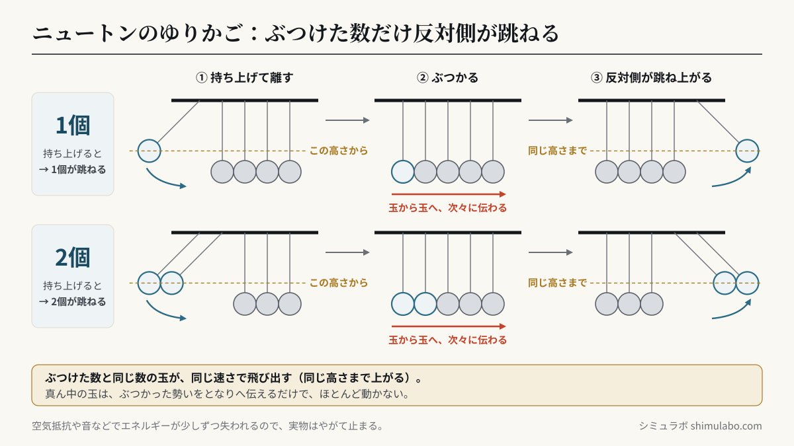
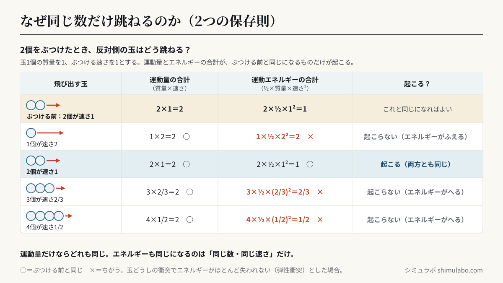

結論：1個ぶつけたら1個、2個なら2個だけが反対側で跳ねます。これは運動量保存則と運動エネルギー保存則の両方を同時に満たす答えが「同じ個数・同じ速さで跳ねる」だけだから。真ん中の玉は衝撃を一瞬で伝えるだけで、ほとんど動きません。
ニュートンのゆりかごとは
ニュートンのゆりかご（Newton's cradle）は、同じ重さの金属球を糸で吊るして一列に並べた装置です。端の球を引いて離すと、反対端の球だけが同じ勢いで跳ね上がります。物理学者アイザック・ニュートンにちなんで名付けられ、運動量とエネルギーの保存をわかりやすく示す教材として有名です。
なぜ反対側だけが同じ数跳ねるのか
玉どうしの衝突では、ほぼエネルギーが失われない「弾性衝突」が起こります。このとき成り立つのが次の2つです。
2つの保存則
運動量保存：質量×速度の合計は衝突の前後で変わらない
エネルギー保存：（½×質量×速度²）の合計も変わらない
運動量保存：質量×速度の合計は衝突の前後で変わらない
エネルギー保存：（½×質量×速度²）の合計も変わらない
この2つを同時に満たす組み合わせは、「ぶつけた数と同じ数の玉が、同じ速さで反対側から飛び出す」場合だけです。だから1個なら1個、2個なら2個。真ん中の玉は、力を瞬間的に隣へ伝えるパイプ役で、自分はほとんど動きません。






図はタップすると大きく表示されます。資料やSNSに使うときは、出典「シミュラボ」とページのURLを添えてください。
よくある質問
- 2個ぶつけたら、なぜ1個が倍の速さで飛ばないの？
- その場合は運動量は保存できてもエネルギーが保存できません。2つの保存則を両立できるのは「同じ数・同じ速さ」だけです。
- いつか止まるのはなぜ？
- 空気抵抗や、玉のわずかな変形・音による微小なエネルギー損失があるためです。理想状態なら止まりません。
- 真ん中の玉は本当に動いていないの？
- 厳密にはごくわずかに動きますが、衝撃を伝えるだけでほぼ静止して見えます。
参考
- Newton, I. 運動の三法則（運動量保存の基礎）
- Hutzler, S. et al. "Rocking Newton’s cradle" (American Journal of Physics, 2004)
- 高校物理「弾性衝突と運動量保存」